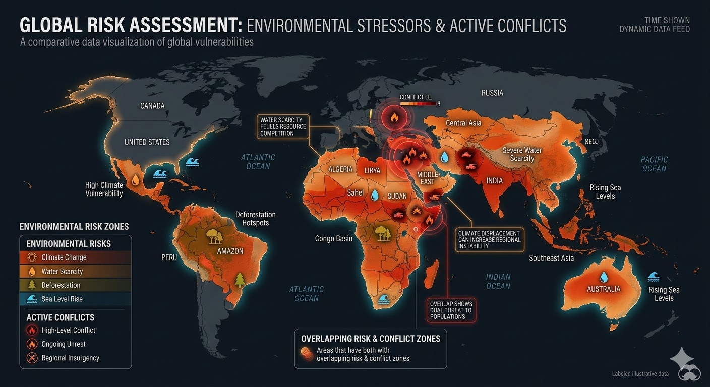

Brennpunkt Erde
Wenn Ressourcen schwinden, brennt die Welt. Analysen zur globalen Instabilität.

Abbildung: Korrelation zwischen CO₂-Vulnerabilität und bewaffneten Konflikten (Stand 2026).
Ukraine-Konflikt
Militärische Operationen führen zur systematischen Zerstörung von Industrieanlagen. Die resultierende Luft- und Bodenvergiftung zerstört die Kornkammer Europas und beschleunigt lokale Klimaextreme.
Sahel & Sudan
Die unaufhaltsame Wüstenbildung (Desertifikation) vernichtet Lebensgrundlagen. Der Kampf um die letzten fruchtbaren Böden und Wasserlöcher löst ethnische Konflikte und massive Migrationsbewegungen aus.
Naher Osten
In Krisengebieten wie Gaza führt die Zerstörung ziviler Infrastruktur zur totalen Verseuchung des Grundwassers. Klimaschutz ist hier unmöglich, das Überleben hängt an schwindenden externen Ressourcen.
Frieden durch Klimaschutz
Jede Tonne eingespartes CO₂ ist eine Investition in die globale Sicherheit. Transparenz über Emissionen nimmt denjenigen die Macht, die von Ressourcenknappheit profitieren.
Jetzt aktiv werden